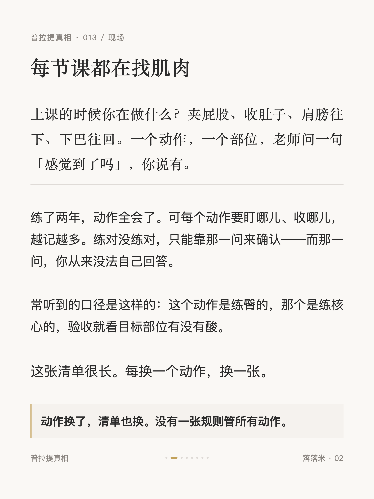
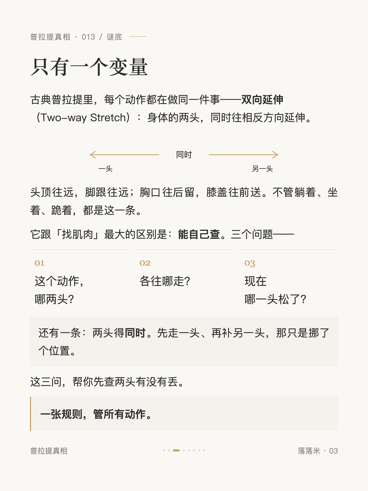
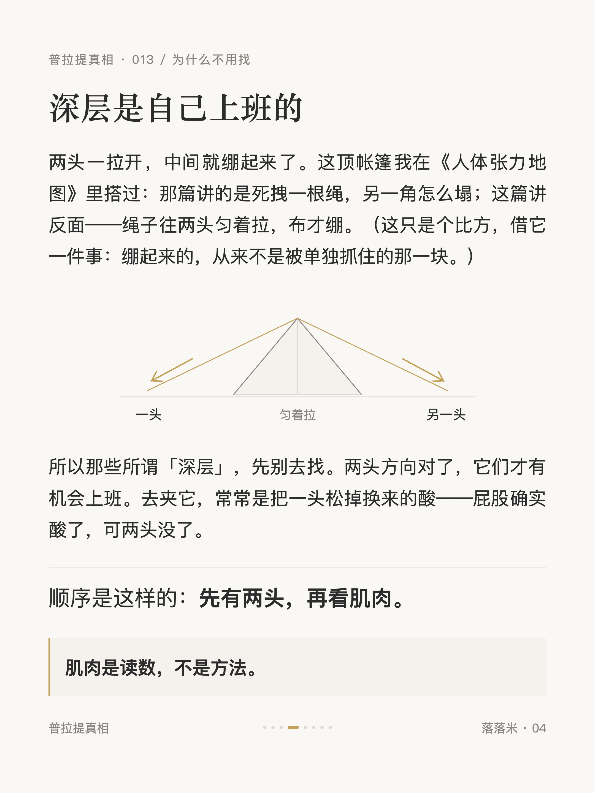
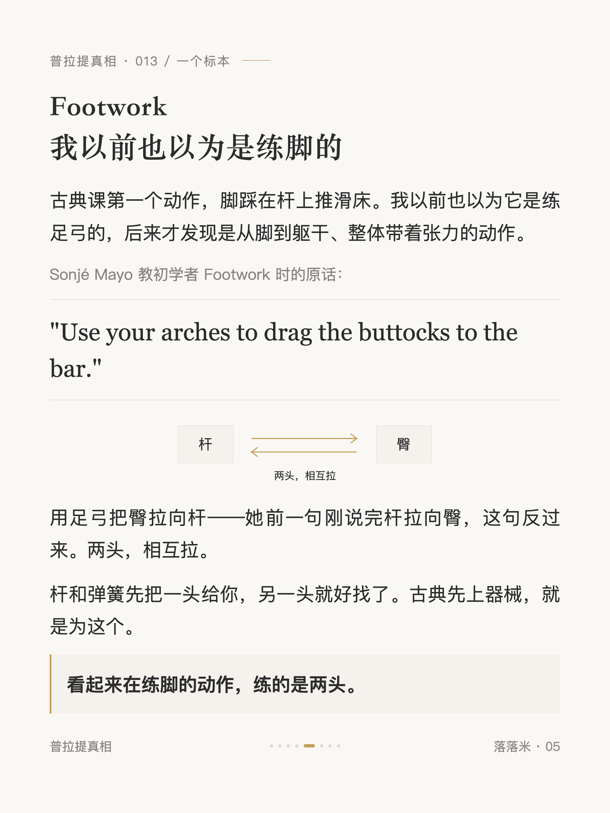
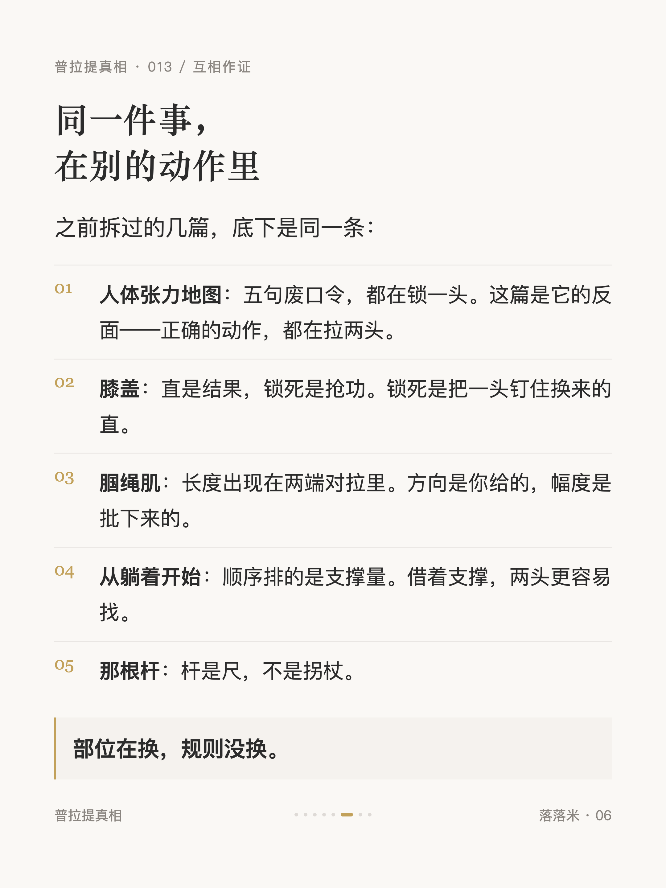
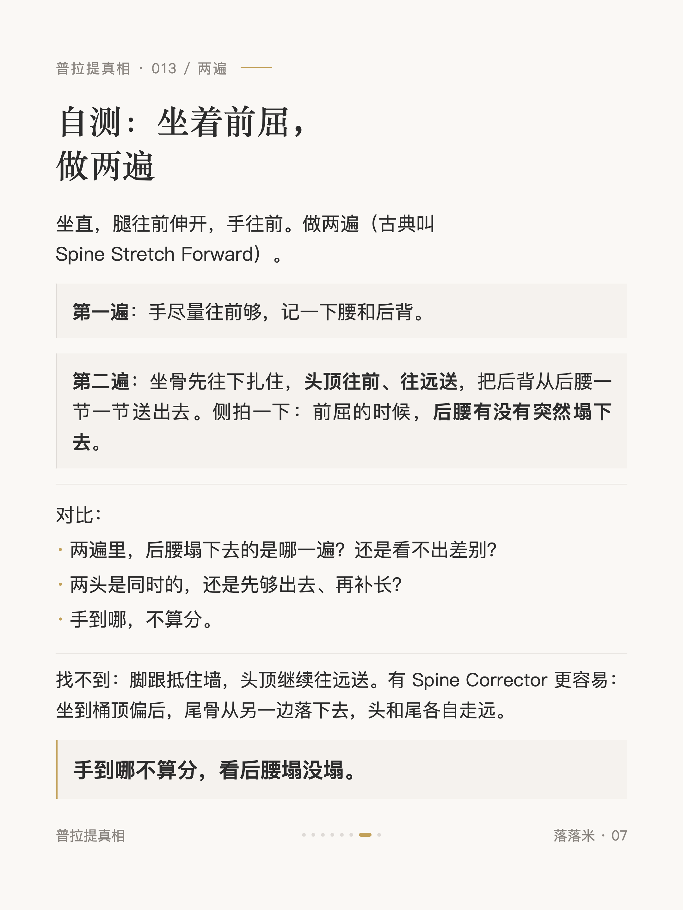
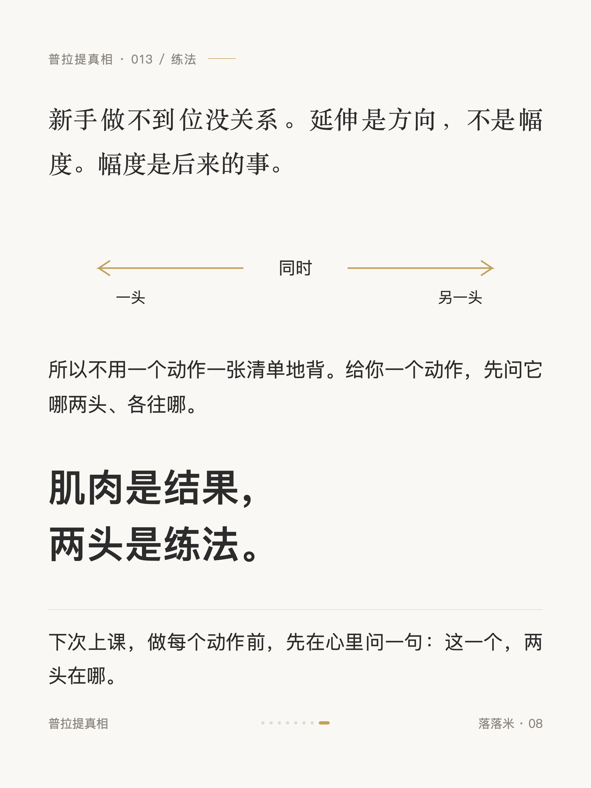

普拉提真相 #013
普拉提动作记不住，其实只有一条规则

1 / 8

2 / 8

3 / 8

4 / 8

5 / 8

6 / 8

7 / 8

8 / 8
← 左右滑动浏览全部卡片 →
先交代：我不是教练，练古典大半年，之前也是一节课一节课找部位的人——口令、方向、呼吸，每个动作记一套，越记越多。写这篇是因为发现自己不用这么记了：随便给一个动作，先看它两头往哪走，该盯的地方就出来了。
练臀、练核心、找深层，这些词每节课都听。但古典里每个动作只有一个通用变量：身体两头往相反方向走。你要找的那块肌肉，是两头拉开之后的读数，不是方法。卡片里有它的三个可查的问题、一个 Footwork 的标本（也说了古典为什么先上器械：杆和弹簧先把一头给你），还有一个坐着前屈的两遍自测——手到哪不算分，看后腰塌没塌。
新手做不到位没关系，延伸是方向不是幅度。